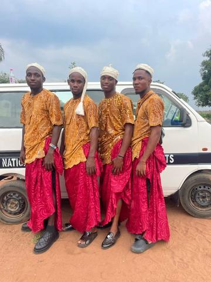

View
Mosaic
Photo tiles for every region and kind of play; pick a tile to open its games.
Mosaic of tiles
Where in the world
 Africa226 games
Africa226 games Middle East116 games
Middle East116 games South Asia161 games
South Asia161 games East Asia270 games
East Asia270 games Europe299 games
Europe299 games Americas191 games
Americas191 games
Oceania61 games Worldwide33 games
Worldwide33 games